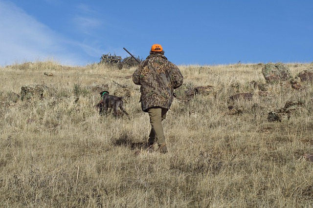

Responsabilidade e cumprimento das normas
A seguridade na caza comeza por actuar con responsabilidade e respectar sempre a normativa. As persoas que empregan armas de caza deben coñecer as regras establecidas e cumprir as condicións legais necesarias para a súa utilización.
A maior virtude é a responsabilidade.

Prevención de accidentes
- Tratar sempre as armas con moito coidado.
- Gardalas nun lugar seguro e cumprir a normativa de almacenamento.
- Actuar con responsabilidade para non poñer en risco outras persoas.
Seguridade das persoas e do medio
Na páxina oficial da Garda Civil podemos consultar información sobre a normativa e a seguridade relacionadas coas armas.